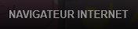
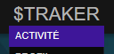
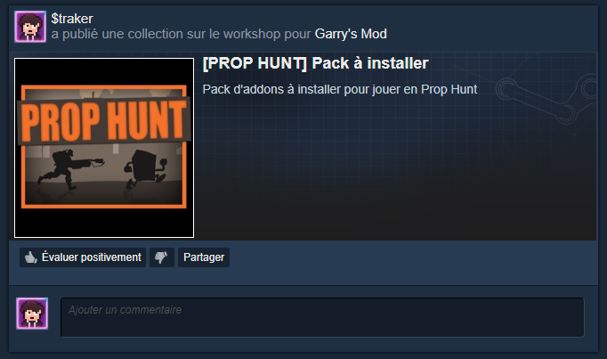
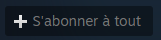
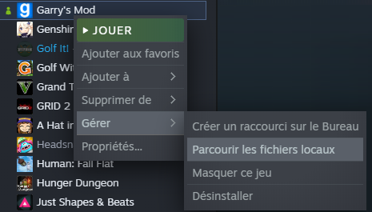
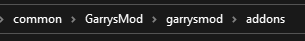
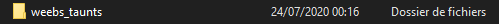
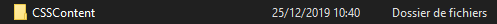

Installation des addons de la collection
Pour commencer, vous devez téléchargez cette collection
Si vous n'êtes pas connecté sur Steam sur votre navigateur internet, lancez un jeu au hasard
dans votre bibliothèque et faites "SHIFT" + "TAB" puis cliquez en bas sur "navigateur internet"

Collez ensuite l'URL en haut de la petite fenêtre du navigateur internet intégré de Steam

Vous pouvez aussi aller dans l'onglet "Activité" sur Steam

Et cliquez sur la collection

Une fois sur connecté, cliquez sur "s'abonner à tout"

Lancez maintenant votre jeu et tout devrait fonctionner à merveille
Installation du pack de sons custom du Weebs Krou
Pour commencer, vous devez télécharger ce fichier zip
Une fois télécharger rendez-vous dans votre bibliothèque Steam, faites un
clique droit sur Garry's Mod puis "Gérer" et "Parcourir les fichiers locaux"

Rendez vous ensuite dans le dossier "garrysmod" puis "addons"

Et glissez le dossier "weeb_taunt" du fichier zip dans le dossier des addons

Lancez maintenant votre jeu et tout devrait fonctionner à merveille
Installation des content de Counter Strike Source (Optionnel)
Si vous n'avez pas le jeu Counter Strike Source vous aurez des bugs sur certaines maps, tel que "office" dans la collection
Avoir ces contents est facultatif mais très conseillé, suivez cette étape si vous les voulez
Pour commencer, vous devez télécharger ce fichier zip
Une fois télécharger rendez-vous dans votre bibliothèque Steam, faites un
clique droit sur Garry's Mod puis "Gérer" et "Parcourir les fichiers locaux"
Rendez vous ensuite dans le dossier "garrysmod" puis "addons"
Et glissez le dossier "CSSContent" du fichier zip dans le dossier des addons

(Mon dossier a un nom différent car j'ai le jeu Counter Strike Source sur Steam légalement)
Lancez maintenant votre jeu et tout devrait fonctionner à merveille